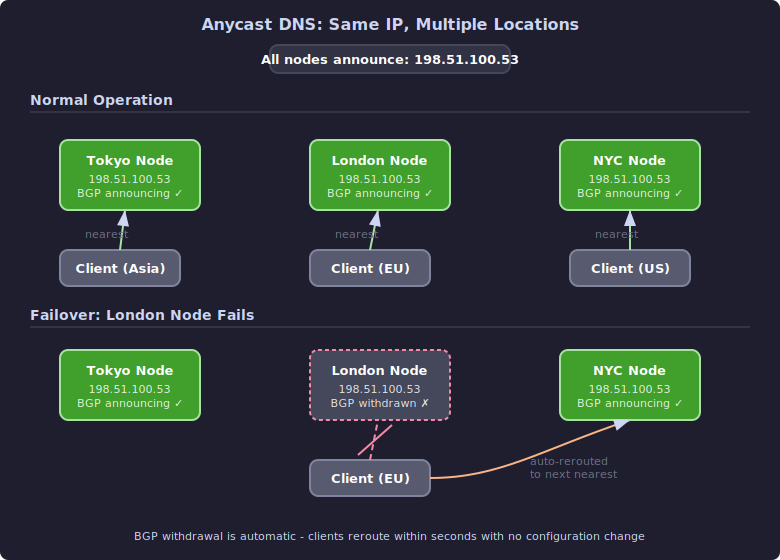

DNS Architecture and Operations¶
This guide covers the operational side of DNS - how to design resilient architectures, transfer zones between servers, get email DNS right, monitor your infrastructure, and migrate records without downtime.
Primary/Secondary Topologies¶
Every production DNS deployment uses at least two authoritative servers. The question is how to organize them.
Standard Primary/Secondary¶
The simplest topology: one primary server where you edit zone data, and one or more secondaries that receive copies via zone transfer.
Zone edits
|
v
+-------+-------+
| Primary | (ns1.example.com)
| 198.51.100.1 |
+-------+-------+
|
NOTIFY + AXFR/IXFR
|
+-------+-------+
| Secondary | (ns2.example.com)
| 203.0.113.2 |
+-------+-------+
Both servers are listed in the NS records and serve queries equally. The primary is authoritative for edits; the secondaries are authoritative for serving.
Hidden Primary¶
In a hidden primary topology, the primary server is not listed in NS records and doesn't serve public queries. Only the secondaries are public-facing.
+-------+-------+
| Hidden Primary | (NOT in NS records)
| 10.0.0.1 | (internal IP only)
+-------+-------+
| |
AXFR/IXFR AXFR/IXFR
| |
+-----+-----+ +--+--------+
| Secondary | | Secondary | (ns1.example.com, ns2.example.com)
| 198.51.100.1| | 203.0.113.2| (public-facing)
+-----------+ +------------+
Why use a hidden primary:
- Security - the server where you edit zones is not exposed to the internet. Attackers can't target it with DDoS or exploit attempts.
- Flexibility - you can use any software or configuration on the primary (including database-backed systems like PowerDNS) and serve via lightweight secondaries (NSD).
- Maintenance - you can take the primary offline for maintenance without affecting DNS resolution.
The primary still needs to be reachable by the secondaries for zone transfers. Put it on a private network or restrict access by IP.
Zone Transfers In Depth¶
AXFR (Full Transfer)¶
AXFR transfers the entire zone from primary to secondary over TCP. The secondary requests a transfer, and the primary sends every record in the zone.
example.com. 3600 IN SOA ns1.example.com. admin.example.com. 2025011501 ...
example.com. 3600 IN NS ns1.example.com.
example.com. 3600 IN NS ns2.example.com.
example.com. 3600 IN A 198.51.100.10
www.example.com. 3600 IN A 198.51.100.10
mail.example.com. 3600 IN A 198.51.100.20
example.com. 3600 IN SOA ns1.example.com. admin.example.com. 2025011501 ...
The SOA record appears at both the beginning and end - this marks the boundaries of the transfer.
IXFR (Incremental Transfer)¶
IXFR (RFC 1995) transfers only the changes since the secondary's last known serial. This is dramatically more efficient for large zones with small changes.
An IXFR response contains: 1. The new SOA (with the current serial) 2. The old SOA (with the serial the secondary had) 3. Records to remove (from the old version) 4. The new SOA again 5. Records to add (in the new version)
Not all servers support IXFR. When IXFR isn't available (or the change is too large), the server falls back to AXFR.
NOTIFY¶
When you change a zone on the primary, you don't want secondaries to wait until their next SOA refresh poll. The NOTIFY mechanism (RFC 1996) lets the primary immediately tell secondaries that the zone has changed.
The primary sends a NOTIFY message to all configured secondaries. Each secondary responds by checking the primary's SOA serial and initiating a transfer if the serial is higher.
sequenceDiagram
participant Admin as Admin
participant Primary as Primary (ns1)
participant Secondary as Secondary (ns2)
Admin->>Primary: Edit zone, increment serial
Primary->>Secondary: NOTIFY (UDP)
Secondary->>Primary: SOA query (check serial)
Primary-->>Secondary: SOA reply (serial: 2025011502)
Note over Secondary: New serial > my serial (2025011501)
Secondary->>Primary: AXFR or IXFR request (TCP)
Primary-->>Secondary: Zone data transfer
Note over Secondary: Zone loaded, serving new dataTSIG for Zone Transfer Security¶
Zone transfers should always be authenticated with TSIG (see the BIND and NSD and Unbound guides for configuration details). Without TSIG, anyone who can reach your primary can request a full dump of your zone data.
Troubleshooting Zone Transfers¶
# Check if secondaries are in sync (compare serials)
dig @ns1.example.com example.com SOA +short
dig @ns2.example.com example.com SOA +short
# Test if the primary allows transfers
dig @198.51.100.1 example.com AXFR
# On the secondary, force a transfer
# BIND:
rndc retransfer example.com
# NSD:
nsd-control force_transfer example.com
# Check zone transfer logs
journalctl -u named | grep transfer
journalctl -u nsd | grep xfr
Common zone transfer problems:
| Symptom | Cause |
|---|---|
| "Transfer refused" | Primary's allow-transfer doesn't include the secondary's IP |
| Serial numbers match but data differs | Someone edited the zone without incrementing the serial |
| NOTIFY not received | Firewall blocking UDP/53 from primary to secondary |
| TSIG verification failure | Key mismatch or clock skew between servers |
Split-Horizon DNS¶
Split-horizon (or split-brain) DNS returns different answers depending on who's asking. Internal clients get internal IP addresses; external clients get public IP addresses.
BIND Views¶
BIND's view blocks are the most common implementation (see the BIND guide for full configuration). Each view has its own zone data and matching criteria.
Separate Servers¶
An alternative to views is running separate DNS servers for internal and external resolution:
Internal clients ──> Internal resolver (10.0.0.1)
├── serves internal zones directly
└── forwards external queries to public DNS
External clients ──> Public authoritative server (198.51.100.1)
└── serves only public zone data
This is simpler to reason about and avoids the complexity of view configuration. The tradeoff is managing two separate sets of zone data.
When to Use Split-Horizon¶
- Internal services with private IPs that shouldn't be exposed externally
- VPN environments where the same hostname should resolve differently inside and outside the VPN
- Development environments where
api.example.comshould point to a staging server internally
Anycast DNS¶
Anycast is a routing technique where the same IP address is announced from multiple physical locations via BGP. When a client queries that IP, the network routes the query to the nearest (in network terms) instance.

All nodes serve identical zone data (typically synced from a hidden primary) but operate independently. If one node goes down, BGP withdraws its route advertisement and traffic automatically shifts to the next nearest node.
Anycast is how the root servers operate - 13 identities served by roughly 1,954 instances worldwide. It's also how major DNS providers like Cloudflare (1.1.1.1) and Google (8.8.8.8) deliver low-latency DNS.
Cloudflare's 1.1.1.1 is an interesting case. Before Cloudflare obtained the address for their public DNS resolver, 1.1.1.1 had been used as a dummy or placeholder address for years (like 127.0.0.1 but on the public internet). When Cloudflare started announcing it via anycast, the address was already receiving enormous volumes of junk traffic from misconfigured networks, testing scripts, and devices hardcoded with the address. They had to build significant filtering capacity just to handle the noise.
Notable DNS Outages¶
Understanding why large-scale DNS architectures fail teaches you what to design for:
Facebook, October 4, 2021. Facebook's DNS servers withdrew their BGP route advertisements, making Facebook's authoritative DNS unreachable from the entire internet. The BGP withdrawal was triggered by a maintenance command that was supposed to assess backbone capacity - but a bug in the audit tool caused it to withdraw all routes instead. Facebook's internal DNS servers were designed to withdraw BGP routes when they detected they couldn't reach the backbone, interpreting it as a connectivity failure. This was a safety mechanism working exactly as designed - the servers concluded they were disconnected and stopped advertising themselves. The result was a 7-hour global outage affecting Facebook, Instagram, WhatsApp, and Messenger.
Dyn, October 21, 2016. The Mirai botnet (composed of compromised IoT devices like cameras and DVRs) launched a massive DDoS attack against Dyn, a major managed DNS provider. Since Dyn provided authoritative DNS for Twitter, Reddit, Netflix, Amazon, Spotify, and many others, the attack took all of these services offline for hours - even though the services themselves were running fine. The outage demonstrated the risk of concentrating authoritative DNS with a single provider.
These incidents share a theme: DNS is so fundamental that when it breaks, everything built on top of it breaks too, often in ways that prevent you from fixing the DNS problem itself (Facebook engineers couldn't access internal tools because DNS was down).
DNS and Email: Getting It Right¶
Email deliverability depends on getting five DNS record types correct. Missing or misconfigured email DNS is the most common reason legitimate email ends up in spam folders.
sequenceDiagram
participant Sender as Sending MTA (mail.sender.com)
participant DNS as DNS
participant Receiver as Receiving MTA (mail.example.com)
Sender->>DNS: MX lookup for example.com
DNS-->>Sender: 10 mail.example.com
Sender->>DNS: A lookup for mail.example.com
DNS-->>Sender: 198.51.100.20
Sender->>Receiver: SMTP connect to 198.51.100.20:25
Sender->>Receiver: MAIL FROM: user@sender.com
Note over Receiver: Check SPF
Receiver->>DNS: TXT lookup for sender.com
DNS-->>Receiver: v=spf1 ... -all
Note over Receiver: SPF: PASS ✓
Note over Receiver: Check DKIM signature
Receiver->>DNS: TXT lookup for selector._domainkey.sender.com
DNS-->>Receiver: v=DKIM1; k=rsa; p=...
Note over Receiver: DKIM: PASS ✓
Note over Receiver: Check DMARC policy
Receiver->>DNS: TXT lookup for _dmarc.sender.com
DNS-->>Receiver: v=DMARC1; p=reject
Note over Receiver: DMARC: PASS ✓
Note over Receiver: Check reverse DNS
Receiver->>DNS: PTR lookup for 198.51.100.10
DNS-->>Receiver: mail.sender.com
Note over Receiver: FCrDNS: PASS ✓
Receiver-->>Sender: 250 OK - Message acceptedMX Records¶
MX records tell sending mail servers where to deliver email for your domain:
Lower priority numbers are tried first. Having at least two MX records with different priorities ensures email delivery if one server is down.
SPF (Sender Policy Framework)¶
SPF tells receiving servers which IP addresses are authorized to send email for your domain:
Breaking down the syntax:
| Mechanism | Meaning |
|---|---|
v=spf1 |
SPF version 1 (required) |
ip4:198.51.100.0/24 |
This IP range is authorized |
include:_spf.google.com |
Also allow whatever Google's SPF record allows |
-all |
Reject everything not explicitly listed |
The trailing qualifier matters:
| Qualifier | Meaning |
|---|---|
-all |
Hard fail - reject unauthorized senders |
~all |
Soft fail - accept but mark as suspicious |
?all |
Neutral - no opinion |
+all |
Pass everything (defeats the purpose of SPF) |
Start with ~all while testing, switch to -all when confident.
SPF has a 10 DNS lookup limit. Every include:, a:, mx:, and redirect= mechanism triggers a lookup. Exceeding the limit causes SPF to return permerror, and receiving servers may reject your email. Flatten nested includes if you hit this limit.
DKIM (DomainKeys Identified Mail)¶
DKIM adds a cryptographic signature to outgoing email. The receiving server looks up the public key in DNS and verifies the signature:
The selector (selector1) lets you rotate keys without disrupting verification. You can have multiple selectors active simultaneously - old emails still verify against the old selector while new emails use the new one.
When rotating DKIM keys: 1. Generate a new key pair with a new selector name 2. Publish the new selector's public key in DNS 3. Configure your mail server to sign with the new selector 4. Keep the old selector's DNS record for at least 30 days (so emails in transit can still be verified) 5. Remove the old selector
DMARC (Domain-based Message Authentication, Reporting and Conformance)¶
DMARC ties SPF and DKIM together and tells receiving servers what to do when authentication fails:
_dmarc.example.com. IN TXT "v=DMARC1; p=reject; sp=reject; rua=mailto:dmarc-reports@example.com; pct=100"
| Tag | Meaning |
|---|---|
p=reject |
Policy: reject email that fails both SPF and DKIM |
sp=reject |
Subdomain policy: same as main domain |
rua=mailto:... |
Send aggregate reports to this address |
pct=100 |
Apply the policy to 100% of failing messages |
Start with p=none to collect reports without affecting delivery, then move to p=quarantine, then p=reject.
PTR (Reverse DNS)¶
Many mail servers verify that the sending IP has a PTR record that resolves back to a hostname, and that hostname resolves forward to the same IP (forward-confirmed reverse DNS, or FCrDNS):
Complete Email DNS Audit¶
Run this sequence to verify all email DNS for a domain:
#!/bin/bash
DOMAIN="${1:?Usage: $0 domain.com}"
echo "=== MX Records ==="
dig +short MX "$DOMAIN"
echo -e "\n=== SPF ==="
dig +short TXT "$DOMAIN" | grep spf
echo -e "\n=== DKIM (common selectors) ==="
for sel in default selector1 selector2 google dkim; do
result=$(dig +short TXT "${sel}._domainkey.${DOMAIN}" 2>/dev/null)
[ -n "$result" ] && echo "$sel: $result"
done
echo -e "\n=== DMARC ==="
dig +short TXT "_dmarc.${DOMAIN}"
echo -e "\n=== MX host A records ==="
for mx in $(dig +short MX "$DOMAIN" | awk '{print $2}'); do
echo "$mx -> $(dig +short A "$mx")"
done
echo -e "\n=== PTR for MX IPs ==="
for mx in $(dig +short MX "$DOMAIN" | awk '{print $2}'); do
ip=$(dig +short A "$mx")
[ -n "$ip" ] && echo "$ip -> $(dig +short -x "$ip")"
done
Monitoring and Alerting¶
What to Monitor¶
| Check | How | Alert When |
|---|---|---|
| Authoritative server responding | dig @ns1 example.com SOA |
Query fails or times out |
| Zone serial consistency | Compare SOA serial across all NS | Secondaries behind primary |
| DNSSEC signature expiry | dig +dnssec and check RRSIG dates |
Signatures expire within 7 days |
| Resolution time | dig query time |
Consistently above 500ms |
| Zone transfer working | Compare SOA serial on secondary | Secondary serial behind for >2x refresh interval |
| Certificate authority (CAA) | dig CAA example.com |
Missing or wrong CAA records |
dig-Based Health Checks¶
Simple monitoring script using dig:
#!/bin/bash
# dns-healthcheck.sh - basic DNS monitoring
DOMAIN="example.com"
SERVERS="ns1.example.com ns2.example.com"
EXPECTED_SERIAL="" # auto-detect from first server
for server in $SERVERS; do
result=$(dig @"$server" "$DOMAIN" SOA +short +time=5 +tries=2 2>/dev/null)
if [ -z "$result" ]; then
echo "CRITICAL: $server not responding for $DOMAIN"
continue
fi
serial=$(echo "$result" | awk '{print $3}')
if [ -z "$EXPECTED_SERIAL" ]; then
EXPECTED_SERIAL="$serial"
elif [ "$serial" != "$EXPECTED_SERIAL" ]; then
echo "WARNING: $server serial $serial != expected $EXPECTED_SERIAL"
else
echo "OK: $server serial $serial"
fi
done
dnstap¶
dnstap is a structured logging format for DNS traffic. BIND, Unbound, and NSD all support it. Instead of parsing text logs, dnstap captures DNS queries and responses as Protocol Buffer messages, making them easy to process programmatically.
Enable in Unbound:
server:
dnstap:
dnstap-enable: yes
dnstap-socket-path: "/var/run/unbound/dnstap.sock"
dnstap-send-identity: yes
dnstap-send-version: yes
dnstap-log-resolver-query-messages: yes
dnstap-log-resolver-response-messages: yes
Migration Patterns¶
TTL Lowering Strategy¶
When migrating DNS records (changing providers, moving servers, changing IPs), lower the TTL well in advance:
Timeline:
gantt
title DNS Record Migration Timeline
dateFormat YYYY-MM-DD
axisFormat %a %b %d
section TTL
Original TTL: 86400s (24h) :done, ttl1, 2025-01-13, 1d
Lower TTL to 300s (5min) :crit, ttl2, 2025-01-14, 0d
Low TTL active :active, ttl3, 2025-01-14, 2d
Raise TTL back to 86400s :ttl4, 2025-01-17, 0d
section Cache Drain
Wait for old 24h caches to expire :crit, drain, 2025-01-14, 1d
section Record Change
All resolvers on 5min TTL :milestone, 2025-01-15, 0d
Update DNS record :crit, change, 2025-01-16, 0d
Monitor (5min full propagation) :monitor, 2025-01-16, 1dThe critical detail: you must wait for the old TTL to expire before making the change. If your TTL was 86400 and you lower it to 300, you need to wait 24 hours before the change so that all cached copies of the old record (with the old TTL) have expired. Only then will all resolvers be honoring the new 5-minute TTL.
Cutover Checklist¶
Before cutting over DNS to new infrastructure:
[ ] TTL lowered at least (old TTL) seconds before cutover
[ ] New servers tested with direct queries (dig @new-server domain)
[ ] Zone data verified on new servers (named-checkzone / nsd-checkzone)
[ ] DNSSEC chain valid on new servers (if applicable)
[ ] Reverse DNS (PTR) configured on new IP ranges
[ ] Email records (MX, SPF, DKIM, DMARC) updated for new IPs
[ ] Monitoring configured for new servers
[ ] Rollback plan documented (old server kept running)
[ ] NS records at registrar updated
[ ] Old servers kept running for at least 48 hours after cutover
The .io TLD Situation¶
A cautionary note on infrastructure dependency: the .io country-code TLD, popular with tech companies, may face an uncertain future. In 2024, the UK announced it would hand sovereignty of the Chagos Archipelago (British Indian Ocean Territory) to Mauritius. The .io TLD is assigned based on the ISO 3166-1 country code for the British Indian Ocean Territory. If the territory ceases to exist as a distinct entity, the country code could be retired - and with it, the TLD.
Historical precedent exists: Yugoslavia's .yu was retired after the country dissolved, and the Soviet Union's .su technically should have been retired but persists 34 years later due to its large user base. The .io situation is being watched closely by the thousands of companies that built their identity on the domain.
The lesson: when choosing a TLD for critical infrastructure, gTLDs like .com or .net carry less geopolitical risk than ccTLDs.
Further Reading¶
- RFC 5936 - DNS Zone Transfer Protocol (AXFR)
- RFC 1995 - Incremental Zone Transfer (IXFR)
- RFC 1996 - DNS NOTIFY Mechanism
- RFC 7208 - Sender Policy Framework (SPF)
- RFC 6376 - DomainKeys Identified Mail (DKIM)
- RFC 7489 - Domain-based Message Authentication (DMARC)
- dnstap - structured DNS logging format
- Cloudflare Learning Center: DNS - accessible DNS architecture explanations
Previous: DNSSEC | Back to Index